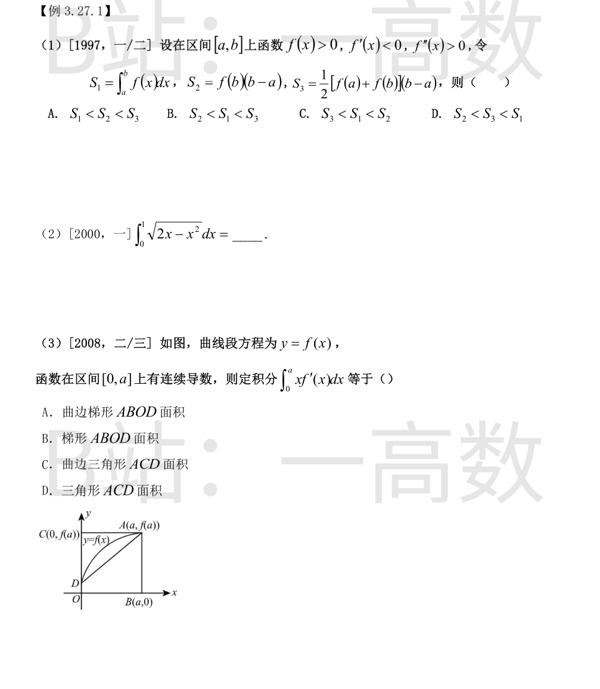
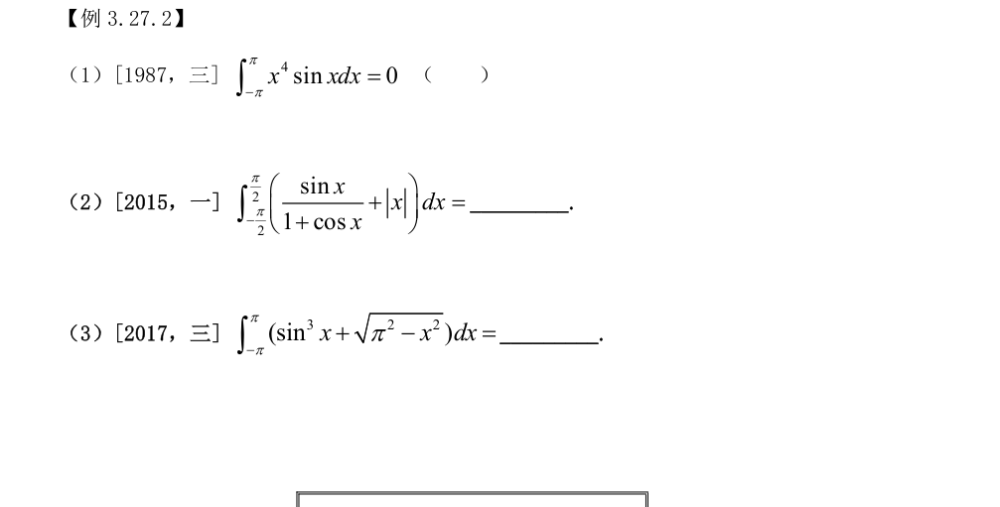
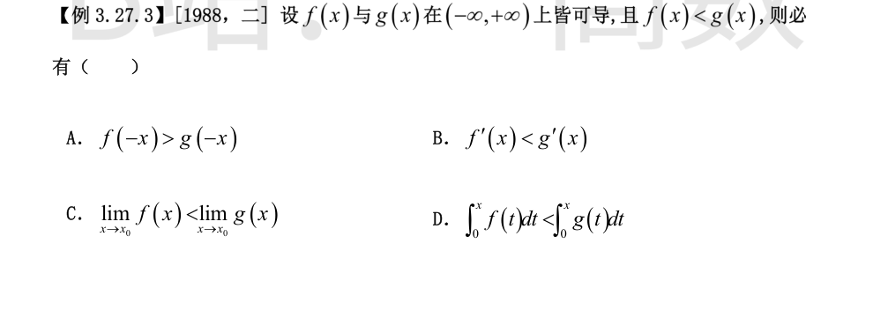
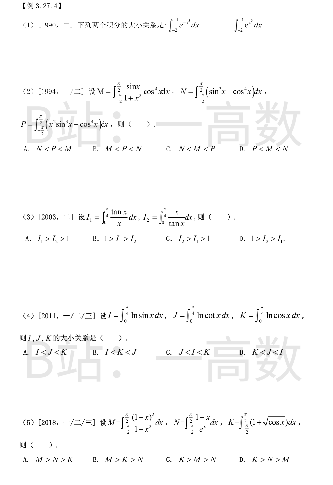
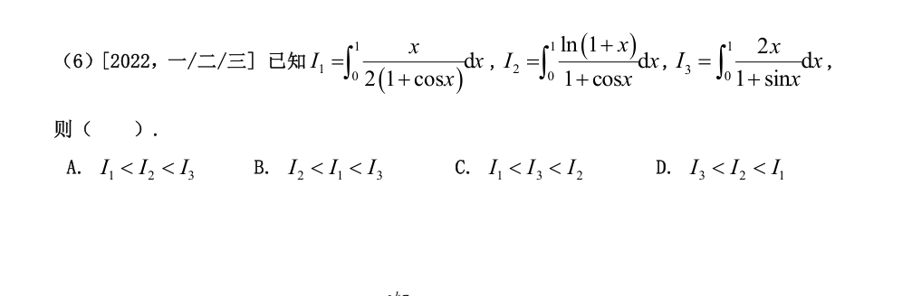
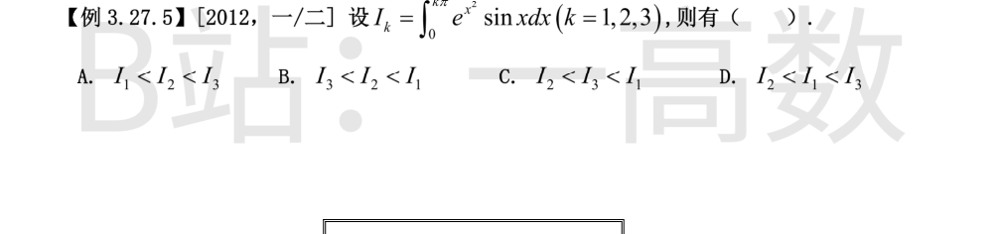
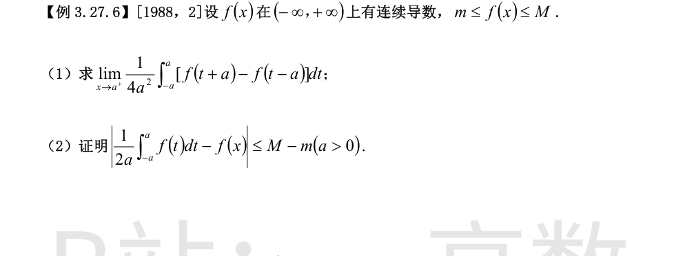
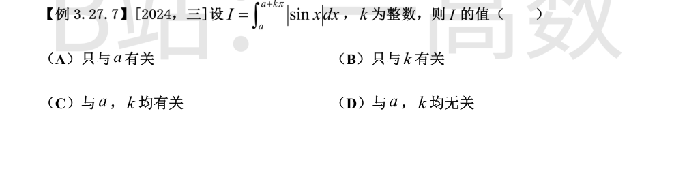

**单调性**：f'(x)<0，f 在 [a,b] 上严格递减，故 f(b)<f(x)<f(a)（端点外严格），于是
$$S_2=\int_a^b f(b)\,dx < S_1=\int_a^b f(x)\,dx.$$
**凸性**：f''(x)>0，曲线下凸（凹向向上），连接两端点 (a,f(a))、(b,f(b)) 的弦位于曲线上方，即曲线在弦之下，故
$$S_1=\int_a^b f(x)\,dx < \frac{f(a)+f(b)}{2}(b-a)=S_3.$$
综上 $S_2<S_1<S_3$，选 **B**。
数值验证：取 f(x)=1/x，[a,b]=[1,2]（满足 f>0, f'<0, f''>0）：S₂=1/2≈0.5，S₁=ln2≈0.693，S₃=¾=0.75，确有 S₂<S₁<S₃。
配方：
$$\int_0^1\sqrt{2x-x^2}\,dx=\int_0^1\sqrt{1-(x-1)^2}\,dx.$$
被积函数是圆 $(x-1)^2+y^2=1$（圆心 (1,0)，半径 1）的上半圆在 $x\in[0,1]$ 上的这段，即半径为 1 的圆面积的四分之一（几何意义直接读出，不必真的换元积分）：
$$\int_0^1\sqrt{2x-x^2}\,dx=\frac{1}{4}\cdot\pi\cdot 1^2=\frac{\pi}{4}.$$
若用换元验证：令 x−1=sin t，积分化为 $\int_{-\pi/2}^{0}\cos^2 t\,dt=\frac{\pi}{4}$。
分部积分：
$$\int_0^a x f'(x)\,dx=\Big[x f(x)\Big]_0^a-\int_0^a f(x)\,dx=a f(a)-\int_0^a f(x)\,dx.$$
$a f(a)$ 是矩形 OBAC（O(0,0)、B(a,0)、A(a,f(a))、C(0,f(a))）的面积；$\int_0^a f(x)dx$ 是曲线 $y=f(x)$ 下方、以线段 OD、OB 为边的曲边梯形面积。二者之差正是：上方以线段 CA（即 y=f(a)）为界、左侧以 y 轴上线段 DC 为界、下方以曲线弧 DA 为界的区域面积，即曲边三角形 ACD：
$$\int_0^a\big[f(a)-f(x)\big]dx=a f(a)-\int_0^a f(x)dx.$$
故选 **C**。

$x^4$ 是偶函数，$\sin x$ 是奇函数，故 $g(x)=x^4\sin x$ 是奇函数；积分区间 $[-\pi,\pi]$ 关于原点对称，且 $g$ 连续，故
$$\int_{-\pi}^{\pi}x^4\sin x\,dx=0.$$
命题正确，括号内应打 √。
区间 $[-\frac{\pi}{2},\frac{\pi}{2}]$ 对称。$\frac{\sin x}{1+\cos x}$：分子奇、分母偶，故为奇函数，
$$\int_{-\pi/2}^{\pi/2}\frac{\sin x}{1+\cos x}dx=0.$$
$|x|$ 为偶函数：
$$\int_{-\pi/2}^{\pi/2}|x|\,dx=2\int_0^{\pi/2}x\,dx=2\cdot\frac{1}{2}\left(\frac{\pi}{2}\right)^2=\frac{\pi^2}{4}.$$
故原式 $=0+\frac{\pi^2}{4}=\frac{\pi^2}{4}$。
$\sin^3 x$ 为奇函数，对称区间 $[-\pi,\pi]$ 上积分为 0；$\sqrt{\pi^2-x^2}$ 为偶函数，其积分是半径为 $\pi$ 的上半圆面积：
$$\int_{-\pi}^{\pi}\sqrt{\pi^2-x^2}\,dx=\frac{1}{2}\cdot\pi\cdot\pi^2=\frac{\pi^3}{2}.$$
故原式 $=0+\frac{\pi^3}{2}=\frac{\pi^3}{2}$。

逐项检验：
**A**：$-x\in(-\infty,+\infty)$，由条件仍得 $f(-x)<g(-x)$，与 A 矛盾，A 错。
**B**：函数值不等式推不出导数不等式。反例：$f(x)=\frac{x^2}{2}-1$，$g(x)=x^2$，处处 $f<g$，但在 $x=-1$ 处 $f'(-1)=-1>-2=g'(-1)$。B 错。
**C**：可导必连续，故
$$\lim_{x\to x_0}f(x)=f(x_0)<g(x_0)=\lim_{x\to x_0}g(x),$$
对一切 $x_0$ 严格成立。C 对。
**D**：$x<0$ 时积分上下限反号，不等式方向不定。反例：$f(x)\equiv-2$，$g(x)\equiv-1$，处处 $f<g$，但 $\int_0^{-1}f\,dt=2>1=\int_0^{-1}g\,dt$。D 错。
故选 **C**。


当 $x\in[-2,-1]$ 时 $x^3\in[-8,-1]<0$，于是 $-x^3>0>x^3$；由 $e^t$ 严格递增：
$$e^{-x^3}>e^{x^3}>0,\qquad x\in[-2,-1].$$
由定积分的保序性：
$$\int_{-2}^{-1}e^{-x^3}dx>\int_{-2}^{-1}e^{x^3}dx.$$
填 **>**。
利用区间 $[-\frac{\pi}{2},\frac{\pi}{2}]$ 的对称性与奇偶性：
**M**：$\dfrac{\sin x}{1+x^2}\cos^4 x$ 中 $\sin x$ 为奇因子，其余为偶因子，整个被积函数为奇函数，故 $M=0$。
**N**：$\sin^3 x$ 为奇函数积分为 0；$\cos^4 x$ 为偶函数且 $\cos^4x\ge 0$ 不恒为 0，故 $N=\int_{-\pi/2}^{\pi/2}\cos^4x\,dx>0$。
**P**：$x^2\sin^3 x$ 为奇函数积分为 0，故 $P=-\int_{-\pi/2}^{\pi/2}\cos^4x\,dx<0$。
所以 $P<0=M<N$，即 $P<M<N$，选 **D**。
在 $(0,\frac{\pi}{4})$ 内 $\tan x>x>0$，故
$$\frac{\tan x}{x}>1>\frac{x}{\tan x}\quad\Rightarrow\quad I_1>\int_0^{\pi/4}1\,dx=\frac{\pi}{4}>I_2,\;\; I_1>I_2.$$
关键还需确定 $I_1$ 与 1 的大小。令 $\varphi(x)=\frac{\tan x}{x}$，
$$\varphi'(x)=\frac{x\sec^2x-\tan x}{x^2}=\frac{x-\sin x\cos x}{x^2\cos^2x}>0\quad\Big(\because \tfrac12\sin 2x<x\Big),$$
故 $\varphi$ 在 $(0,\frac{\pi}{2})$ 严格增，于是 $x\in(0,\frac{\pi}{4})$ 时
$$\frac{\tan x}{x}<\frac{\tan\frac{\pi}{4}}{\frac{\pi}{4}}=\frac{4}{\pi},\qquad
I_1<\int_0^{\pi/4}\frac{4}{\pi}dx=1.$$
综上 $1>I_1>I_2$，选 **B**。
当 $x\in(0,\frac{\pi}{4})$ 时：$0<\sin x<\cos x<1$，且 $\cot x=\frac{\cos x}{\sin x}>1$，故
$$\sin x<\cos x<\cot x.$$
$\ln t$ 严格递增：
$$\ln\sin x<\ln\cos x<\ln\cot x,\qquad x\in\left(0,\tfrac{\pi}{4}\right).$$
在 $(0,\frac{\pi}{4}]$ 上积分（被积函数在 $[0,\frac{\pi}{4}]$ 上可积，瑕点处收敛）：
$$I<K<J.$$
选 **B**。
**M**：$\dfrac{(1+x)^2}{1+x^2}=\dfrac{1+2x+x^2}{1+x^2}=1+\dfrac{2x}{1+x^2}$，其中 $\dfrac{2x}{1+x^2}$ 为奇函数，对称区间上积分为 0，故
$$M=\int_{-\pi/2}^{\pi/2}1\,dx=\pi.$$
**K**：$\sqrt{\cos x}\ge0$ 且在 $(-\frac{\pi}{2},\frac{\pi}{2})$ 内恒正，故 $K=\pi+\int_{-\pi/2}^{\pi/2}\sqrt{\cos x}\,dx>\pi$。
**N**：记 $g(x)=(1+x)e^{-x}$，对称化：
$$N=\int_0^{\pi/2}\big[g(x)+g(-x)\big]dx=\int_0^{\pi/2}\Big[(1+x)e^{-x}+(1-x)e^{x}\Big]dx.$$
由 $e^t\ge 1+t$（等号仅在 $t=0$）：$x\ge0$ 时 $(1+x)e^{-x}\le1$ 且 $(1-x)e^x\le1$，且 $x\in(0,\frac{\pi}{2}]$ 内严格，故被积函数 $<2$，
$$N<\int_0^{\pi/2}2\,dx=\pi.$$
（直接计算验证：$N=\Big[-(2+x)e^{-x}\Big]_{-\pi/2}^{\pi/2}=(2-\frac{\pi}{2})e^{\pi/2}-(2+\frac{\pi}{2})e^{-\pi/2}\approx 2.065-0.742=1.32<\pi\approx3.14$。）
综上 $N<M<K$，即 $K>M>N$，选 **C**。
【仲裁修正】独立校验发现分歧，经仲裁重解，以本答案为准：A 把 M 误算为 \int x^2/(1+x^2)dx=\pi-2\arctan(\pi/2)\approx1.13（漏掉 (1+x)^2 展开中的常数 1）；实际 (1+x)^2/(1+x^2)=1+2x/(1+x^2)，奇部消去后 M=\pi，故 K>M>N 选 C。solver 与 B 正确
在 $[0,1]$ 上比较被积函数（$x>0$ 时各分母均为正）：
**① I₁ 与 I₂**：令 $h(x)=\ln(1+x)-\frac{x}{2}$，$h(0)=0$，$h'(x)=\frac{1}{1+x}-\frac{1}{2}>0$（$0\le x\le1$），故 $\ln(1+x)>\frac{x}{2}$，从而
$$\frac{x}{2(1+\cos x)}<\frac{\ln(1+x)}{1+\cos x}\quad(0<x\le1)\ \Rightarrow\ I_1<I_2.$$
**② I₂ 与 I₃**：由 $\ln(1+x)<x$，
$$\frac{\ln(1+x)}{1+\cos x}<\frac{x}{1+\cos x}.$$
又在 $[0,1]$ 上 $1+\sin x<2(1+\cos x)$（等价于 $\sin x-2\cos x<1$；$\sin x-2\cos x$ 在 $[0,1]$ 上单调增，最大值 $\sin1-2\cos1\approx-0.24<1$），故
$$\frac{x}{1+\cos x}<\frac{2x}{1+\sin x}\quad(0<x\le1)\ \Rightarrow\ I_2<I_3.$$
综上 $I_1<I_2<I_3$，选 **A**。
数值验证：$I_1\approx0.143$，$I_2\approx0.219$，$I_3\approx0.632$。

**相邻比较**：$I_{k+1}-I_k=\int_{k\pi}^{(k+1)\pi}e^{x^2}\sin x\,dx$，其符号由该区间上 $\sin x$ 的符号决定：
- $(\pi,2\pi)$ 上 $\sin x<0$，且 $e^{x^2}>0$，故 $I_2-I_1<0$，即 $I_2<I_1$；
- $(2\pi,3\pi)$ 上 $\sin x>0$，故 $I_3-I_2>0$，即 $I_2<I_3$。
**比较 I₁ 与 I₃**：把后两段都平移到 $[0,\pi]$：
$$\int_{\pi}^{2\pi}e^{x^2}\sin x\,dx\xlongequal{x=t+\pi}-\int_0^{\pi}e^{(t+\pi)^2}\sin t\,dt,\qquad
\int_{2\pi}^{3\pi}e^{x^2}\sin x\,dx\xlongequal{x=t+2\pi}\int_0^{\pi}e^{(t+2\pi)^2}\sin t\,dt.$$
故
$$I_3-I_1=\int_0^{\pi}\Big[e^{(t+2\pi)^2}-e^{(t+\pi)^2}\Big]\sin t\,dt>0,$$
（因 $t\ge0$ 时 $(t+2\pi)^2>(t+\pi)^2$，$e^{x^2}$ 在 $x>0$ 严格增，且 $\sin t\ge0$ 不恒为 0）即 $I_3>I_1$。
综上 $I_2<I_1<I_3$，选 **D**。

题面把极限写成 $x\to a^+$，但表达式中不含 $x$，系排版笔误；本题 1988 年原题极限过程为 $a\to0^+$，按此求解。
**换元**：
$$\int_{-a}^{a}f(t+a)\,dt=\int_0^{2a}f(u)\,du,\qquad \int_{-a}^{a}f(t-a)\,dt=\int_{-2a}^{0}f(u)\,du.$$
记 $\Phi(a)=\int_0^{2a}f(u)du-\int_{-2a}^{0}f(u)du$，则 $\Phi(0)=0$，且
$$\Phi'(a)=2f(2a)-2f(-2a).$$
由洛必达法则（$\frac{0}{0}$ 型）：
$$L=\lim_{a\to0^+}\frac{\Phi(a)}{4a^2}=\lim_{a\to0^+}\frac{2f(2a)-2f(-2a)}{8a}=\lim_{a\to0^+}\frac{f(2a)-f(-2a)}{4a}.$$
仍为 $\frac{0}{0}$ 型，拆项用导数定义：
$$L=\frac{1}{2}\lim_{a\to0^+}\frac{f(2a)-f(0)}{2a}+\frac{1}{2}\lim_{a\to0^+}\frac{f(0)-f(-2a)}{2a}=\frac{1}{2}f'(0)+\frac{1}{2}f'(0)=f'(0).$$
（第二步也可再用一次洛必达：$=\lim\frac{2f'(2a)+2f'(-2a)}{4}=f'(0)$，用到 $f'$ 连续。）
故所求极限为 $f'(0)$。
对任意 $x\in(-\infty,+\infty)$ 与 $a>0$：
$$\left|\frac{1}{2a}\int_{-a}^{a}f(t)\,dt-f(x)\right|=\left|\frac{1}{2a}\int_{-a}^{a}\big[f(t)-f(x)\big]dt\right|\le\frac{1}{2a}\int_{-a}^{a}\big|f(t)-f(x)\big|\,dt.$$
由 $m\le f(x)\le M$，对一切 $t,x$ 有 $-(M-m)\le f(t)-f(x)\le M-m$，即 $|f(t)-f(x)|\le M-m$，故
$$\le\frac{1}{2a}\int_{-a}^{a}(M-m)\,dt=\frac{1}{2a}\cdot 2a\,(M-m)=M-m.$$
$$\boxed{\left|\frac{1}{2a}\int_{-a}^{a}f(t)dt-f(x)\right|\le M-m}\qquad\blacksquare$$
（几何解释：$\frac{1}{2a}\int_{-a}^a f\,dt$ 是 f 在 $[-a,a]$ 上的平均值，必落在 $[m,M]$ 内，且与任一点函数值之差不超过值域宽度。）

$|\sin x|$ 是周期为 $\pi$ 的连续周期函数，且 $\int_0^{\pi}|\sin x|dx=\int_0^{\pi}\sin x\,dx=2$。
区间 $[a,\,a+k\pi]$ 的长度为 $k\pi$，恰为周期的整数倍，故积分值与起点 $a$ 无关：
- $k>0$：$I=k\int_0^{\pi}|\sin x|dx=2k$；
- $k=0$：$I=0=2k$；
- $k<0$：$I=-\int_{a+k\pi}^{a}|\sin x|dx=-2|k|=2k$。
即对任意整数 $k$，恒有 $I=2k$，只依赖 $k$，与 $a$ 无关。选 **B**（只与 $k$ 有关）。